BLOG: Using Spark(Scala) and Oracle Big Data Lite VM for Barcode & QR Detection
David Bayard, Oracle Big Data Pursuit Team
January 2016
Big Data and Scalable Image Processing and Analytics
One of the promises of Big Data is its flexibility to work with large volumes of unstructured types of data such as images and photos. In today’s world, there are many sources of images including social media photos, security cameras, satellite images, and more. There are many kinds of image processing and analytics that are possible from optical character recognition (OCR), license plate detection, bar code detection, face recognition, geological analysis and more. And there are many open source libraries such as OpenCV, Tesseract, ZXing, and others that are available to leverage.
This blog and demonstration was built to show that scalable image analytics does not need to be difficult. Our primary goal in this blog is to use the Oracle Big Data Lite VM environment to demonstrate how to take an open source library and combine it into a Spark/Scala application. In particular, we will use Spark alongside the ZXing (Zebra Crossing) library to detect barcodes and QR Codes from a set of image files.
It should be also noted that instead of writing our own Spark application that we could instead have leveraged Oracle’s Multimedia Analytics framework that comes as a feature of Oracle Big Data Spatial and Graph. For instance, the Multimedia Analytics framework could let us easily support videos as well as still images. In a later blog post, we will extend this example and show how to make it work with the Multimedia Analytics framework. For now you can learn more about the Multimedia Analytics framework here: http://docs.oracle.com/cd/E65728_01/doc.43/e67958/
This blog has the following objectives:
- 1.Learn about the ZXing library for barcode and QR code detection.
- 2.Learn how to build and run a simple Spark(Scala) application using the Oracle Big Data Lite VM.
- 3.Learn how to build and run a Spark(Scala+Java) application using the ZXing libraries.
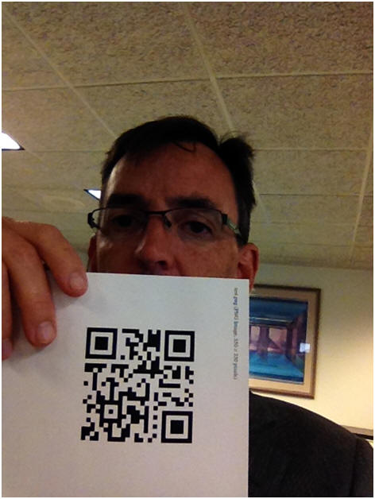
Above is an example of a photo containing a QR code. One potential application could include going through a large set of photos and identifying which photos have QR codes and the content of those QR codes. Not everyone will have a set of photos with QR codes in them nor will they have a need to scan them in bulk, but the concepts of this blog (showing how to use an open source image library alongside Spark and Scala) should still apply- just substitute QR code detection libraries with the image processing libraries of your choice.
Initial Oracle Big Data Lite VM Setup:
This demonstration uses the Oracle Big Data Lite VM version 4.3.0.1, which is available here: http://www.oracle.com/technetwork/database/bigdata-appliance/oracle-bigdatalite-2104726.html . Version 4.3.0.1 of the VM includes CDH 5.4.7, Spark 1.3.0, and Scala 2.10.4.
Once you have the Big Data Lite VM downloaded, imported, and running, then click on the “Refresh Samples” icon on the VM desktop to refresh the samples. At this point, you should fine the files needed for this blog are available under your /home/oracle/src/Blogs/SparkBarcode directory.
[Note: If you want to get access to the files referenced in this blog outside of the Oracle Big Data LiteVM, you can find them here: https://github.com/oracle/BigDataLite/Blogs/SparkBarcode ]
Now run the setup.sh script located at /home/oracle/src/Blogs/SparkBarcode. The setup.sh script will download the necessary files for the open source libraries ZXing and SBT as well as copy some sample image files into hdfs.
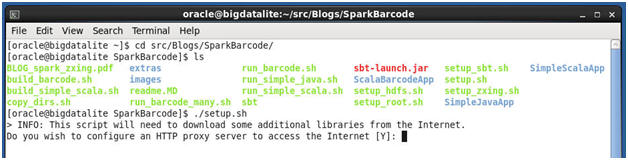
ZXing (Zebra Crossing) for Barcode Detection:
ZXing (pronounced “Zebra Crossing”) is an open source library that does one-dimensional (barcode) and two-dimensional (QR code) image detection. It is written in java. You can find out more at the website: https://github.com/zxing/zxing
As a quick example of ZXing, we can use the ZXing project’s hosted web application to demonstrate its functionality. In the Big Data Lite VM, open up the firefox browser and go to http://zxing.org/ . On the web page, click on the “Browse” button and use the file browser to open the /home/oracle/src/Blogs/SparkBarcode/images/test.jpg file. Then click the “Submit Query” button on the web page.
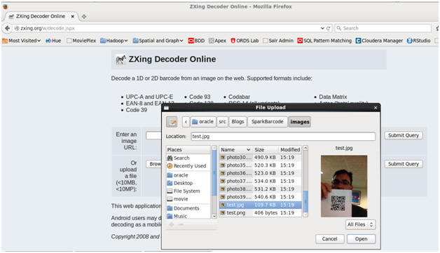
The test.jpg file is a photo containing a 2-dimensional QR code. When you submit the image, the web application should return
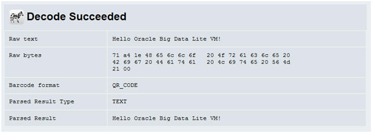
The ZXing project has kindly made available the source code for the web application. To understand how to interact with the ZXing API, we can look at how the web application worked and focus on the source of the DecodeServlet class, which is available here: https://raw.githubusercontent.com/zxing/zxing/master/zxingorg/src/main/java/com/google/zxing/web/DecodeServlet.java
In particular, navigate to the processImage() method which illustrates how the ZXing APIs (such as MultipleBarcodeReader, MultiFormatReader, etc) are used:
private static void processImage(BufferedImage image,
HttpServletRequest request,
HttpServletResponse response) throws IOException, ServletException {
LuminanceSource source = new BufferedImageLuminanceSource(image);
BinaryBitmap bitmap = new BinaryBitmap(new GlobalHistogramBinarizer(source));
Collection results = new ArrayList<>(1);
try {
Reader reader = new MultiFormatReader();
ReaderException savedException = null;
try {
// Look for multiple barcodes
MultipleBarcodeReader multiReader = new GenericMultipleBarcodeReader(reader);
Result[] theResults = multiReader.decodeMultiple(bitmap, HINTS);
if (theResults != null) {
results.addAll(Arrays.asList(theResults));
}
} catch (ReaderException re) {
savedException = re;
}
if (results.isEmpty()) {
try {
// Look for pure barcode
Result theResult = reader.decode(bitmap, HINTS_PURE);
if (theResult != null) {
results.add(theResult);
}
} catch (ReaderException re) {
savedException = re;
}
}
if (results.isEmpty()) {
try {
// Look for normal barcode in photo
Result theResult = reader.decode(bitmap, HINTS);
if (theResult != null) {
results.add(theResult);
}
} catch (ReaderException re) {
savedException = re;
}
}
if (results.isEmpty()) {
try {
// Try again with other binarizer
BinaryBitmap hybridBitmap = new BinaryBitmap(new HybridBinarizer(source));
Result theResult = reader.decode(hybridBitmap, HINTS);
if (theResult != null) {
results.add(theResult);
}
} catch (ReaderException re) {
savedException = re;
}
}
if (results.isEmpty()) {
try {
throw savedException == null ? NotFoundException.getNotFoundInstance() : savedException;
} catch (FormatException | ChecksumException e) {
log.info(e.getMessage());
errorResponse(request, response, "format");
} catch (ReaderException e) { // Including NotFoundException
log.info(e.getMessage());
errorResponse(request, response, "notfound");
}
return;
}
} catch (RuntimeException re) {
// Call out unexpected errors in the log clearly
log.log(Level.WARNING, "Unexpected exception from library", re);
throw new ServletException(re);
}
String fullParameter = request.getParameter("full");
boolean minimalOutput = fullParameter != null && !Boolean.parseBoolean(fullParameter);
if (minimalOutput) {
response.setContentType(MediaType.PLAIN_TEXT_UTF_8.toString());
response.setCharacterEncoding(StandardCharsets.UTF_8.name());
try (Writer out = new OutputStreamWriter(response.getOutputStream(), StandardCharsets.UTF_8)) {
for (Result result : results) {
out.write(result.getText());
out.write('\n');
}
}
} else {
request.setAttribute("results", results);
request.getRequestDispatcher("decoderesult.jspx").forward(request, response);
}
}
We can observe that the code makes a series of attempts to identify barcodes/QR codes. If one attempt does not find a barcode, it attempts again using a different method or parameter/hint. This can help the code to better tolerate image detection challenges like variations in lighting, reflection, angle, resolution, image quality, etc. (If you are interested in other ways to use the ZXing APIs, an alternative example is the decode() method in the DecodeWorker class, which can be found here: https://github.com/zxing/zxing/blob/master/javase/src/main/java/com/google/zxing/client/j2se/DecodeWorker.java )
Our next step is to get started coding with ZXing by building a simple standalone Java application. Thanks to the setup.sh script you ran earlier, we have already downloaded the necessary ZXing java jar libraries, as described in the ZXing Getting Started guide at https://github.com/zxing/zxing/wiki/Getting-Started-Developing.
Our simple java standalone application will be based off the processImage() method from the web application. The source of the sample application can be found in the BarcodeDetector.java file, located in the /home/oracle/src/Blogs/SparkBarcode/SimpleJavaApp/barcodedemo subdirectory.
Essentially, we copied the web application’s processImage() method and removed the dependencies on the http request and response objects. Explore the source code to see what we mean.
Now run the script “run_simple_java.sh” to both compile and run our sample test program against the test image.
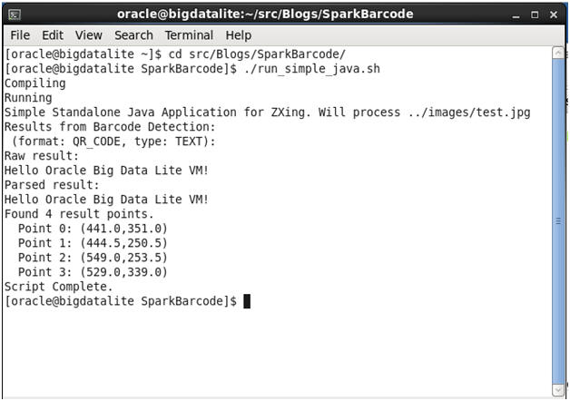
Our simple standalone java application using ZXing libraries is a success!
Spark Development: A First Scala Application
Our ultimate goal is to combine the open source ZXing library with Spark and run it using the resources of our CDH cluster. Specifically, we want to build a Scala Application that calls the java ZXing libraries using the Spark on Yarn Framework to run our barcode detection on a set of images in parallel. But before we attempt that final application, we will first start with a simple Scala application that uses only Java’s built-in libraries.
If you are new to Spark, you should check out http://spark.apache.org/docs/latest/quick-start.html . If you are new to the Scala language, you can find some quick language tips at http://www.artima.com/scalazine/articles/steps.html . This blog assumes you have some experience with working with basic Spark/Scala examples such as word count using the interactive spark-shell.
To help us with our Scala application development, we will want to add the “sbt” utility to the Big Data Lite VM. SBT is frequently used to manage the build process for Scala applications, much like maven is used with Java applications. The “setup.sh” script you ran earlier downloaded sbt for the Big Data Lite VM. If you want more information about SBT, you can navigate to here: http://www.scala-sbt.org/
Another requirement is to prepare a directory structure for our Spark/Scala application. We will follow the template directory structure described in http://spark.apache.org/docs/latest/quick-start.html#self-contained-applications .
The directories and files for the simple application have been created for you and are located at the /home/oracle/src/Blogs/SparkBarcode/SimpleScalaApp subdirectory. They look like…
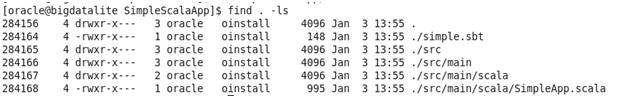
There are 2 key files. The simple.sbt file is the build file that sbt uses and contains information such as dependencies on other libraries. The SimpleApp.scala file is the application source. The source looks like:
/* SimpleApp.scala */
import org.apache.spark.SparkContext
import org.apache.spark.SparkContext._
import org.apache.spark.SparkConf
import java.awt.image.BufferedImage
import javax.imageio.ImageIO
object SimpleApp {
def main(args: Array[String]) {
val conf = new SparkConf().setAppName("Simple Scala Image App")
val sc = new SparkContext(conf)
val files = sc.binaryFiles("barcode/images/test.jpg")
val imageResults = files.map(processSparkImage(_))
imageResults.collect.foreach(
result => println("\nFile:"+result._1+" Width:"+result._2+" Height:"+result._3)
); //this println gets printed to the main stdout
sc.stop()
println("*")
println("*")
println("*")
}
def processSparkImage (
file: (String, org.apache.spark.input.PortableDataStream)
) : (String, Int, Int) =
{
println("In processSparkImage for "+file._1) //this println goes to the executor stdout
val img: BufferedImage = ImageIO.read(file._2.open)
val height = img.getHeight()
println("Height is "+height+" for "+file._1)
file._2.close
return (file._1, img.getWidth(), img.getHeight)
}
}
The simple application is based on the Spark quick start’s example Scala standalone application- the big changes are that we have modified it to use Spark’s sc.binaryFiles() instead of sc.textFile(), and we have created a processSparkImage() function. Our processSparkImage() function uses standard Java Image APIs to extract the width and height of an image.
At the time of this writing, there does not seem to be much published about sc.binaryFiles(), so it is worth a little bit of extra explanation. The output of sc.binaryFiles is a set of tuples. The first element is the filename and the second element is a Spark PortableDataStream of the contents. In Scala notation, the body of processSparkImage() uses file._2 to point to the PortableDataStream and file._1 to point to the filename. The PortableDataStream can be used where you would use an InputStream.
The rest of the code is pretty standard stuff for initializing the SparkContext, etc.
Run the “build_simple_scala.sh” script. If this is your first time running the build script, be patient- it will take a dozen minutes or so as the sbt tool will do a one-time download of supporting libraries to prepare the scala environment for Spark application compilation/development.
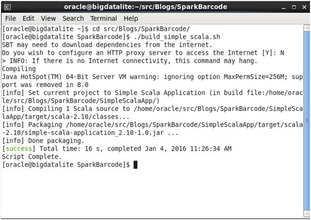
Once the build is done, run the “run_simple_scala.sh” script. Your output should look like below:
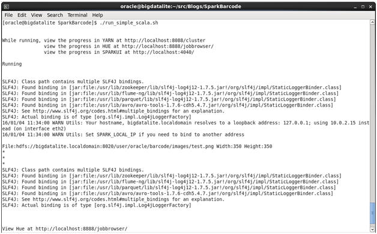
Notice that the simple application has printed out the Width and Height of the test image, as expected. Also notice that the run script has given you the URLs of the YARN, Hue, and Spark web UIs. In the terminal window, you can right click on those URLs and choose “Open Link…” to easily view them. Below are screenshots of the Hue, YARN Resource Manager, and Spark History web UIs:
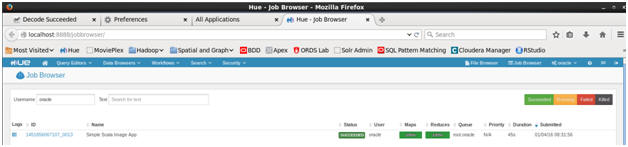
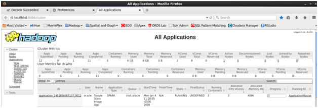
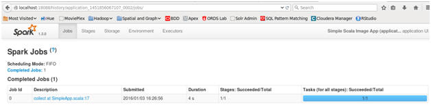
Building our Scala+ZXing Spark Application:
Now, we can move onto integrating the java ZXing library into our Scala application code. We have done so in the application located at /home/oracle/src/Blogs/SparkBarcode/ScalaBarcodeApp.
Let’s look at the code source directory.
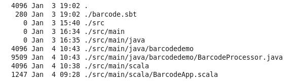
Notice that there are both java and scala subdirectories. Under the java subdirectory, we have a barcodedemo.BarcodeProcessor class with our version of the processImage() function from our simple java application above.
Our scala code is BarcodeApp.scala. It looks like this:
/* BarcodeApp.scala */
import org.apache.spark.SparkContext
import org.apache.spark.SparkContext._
import org.apache.spark.SparkConf
import barcodedemo.BarcodeProcessor
import java.awt.image.BufferedImage
import javax.imageio.ImageIO
object BarcodeApp {
def main(args: Array[String]) {
val conf = new SparkConf().setAppName("Scala ZXing Barcode App")
val sc = new SparkContext(conf)
val files = sc.binaryFiles(args(0))
val imageResults = files.map(processSparkImage(_))
imageResults.collect.foreach(
result => println("\nFile:" + result._1 + "\n Results:" + result._2)
)
//this println gets written to the main stdout
sc.stop()
println("*")
println("*")
println("*")
}
def processSparkImage (
file: (String, org.apache.spark.input.PortableDataStream)
) : (String, String) =
{
println("In processSparkImage for "+file._1) //this println goes to the executor stdout
val img: BufferedImage = ImageIO.read(file._2.open)
file._2.close
return (file._1, BarcodeProcessor.processImage(img))
}
}
Notice that the scala code imports our java BarcodeProcessor class. The Scala processSparkImage() method calls the java BarcodeProcessor.processImage() method, which returns the barcode information in a string.
You can also look at the main method for the Scala application. It defines an RDD using sc.binaryFiles() based on the path defined by the first command-line argument args(0). This will allow us to test our application with 1 or many images by changing the command-line arguments of our run command. Then the application calls the map() transformation for the processSparkImage() method. This will cause the Spark executors to run the processSparkImage() method on each binaryFile. Finally, the Scala code collects the results and prints the output for each file.
We can also look at the barcode.sbt file for this application and notice that we’ve included a dependency for the necessary ZXing libraries from the central maven repository, telling SBT to go ahead and download them as needed for our build.
name := "Scala ZXing Barcode Application"
version := "1.0"
scalaVersion := "2.10.4"
libraryDependencies += "org.apache.spark" %% "spark-core" % "1.3.0"
libraryDependencies += "com.google.zxing" % "core" % "3.2.1"
libraryDependencies += "com.google.zxing" % "javase" % "3.2.1"
Build our application by running “build_barcode.sh”.
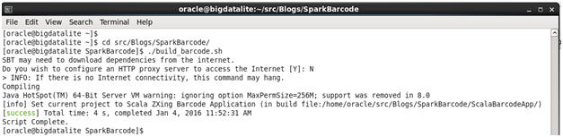
Then run our application. If you want to run for the single test.jpg image, use “run_barcode.sh”. If you want to test for a set of approx 25 images, then use “run_barcode_many.sh”.
Here is the start, middle, and finish of “run_barcode_many.sh”:
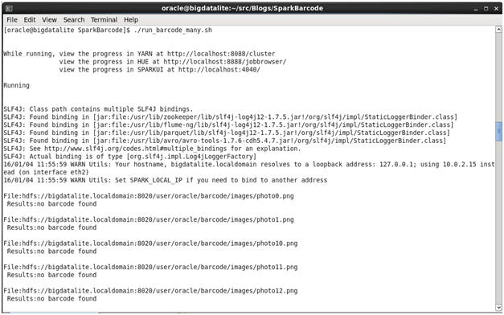
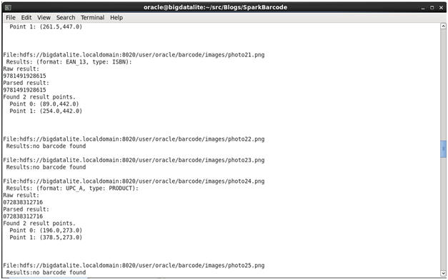
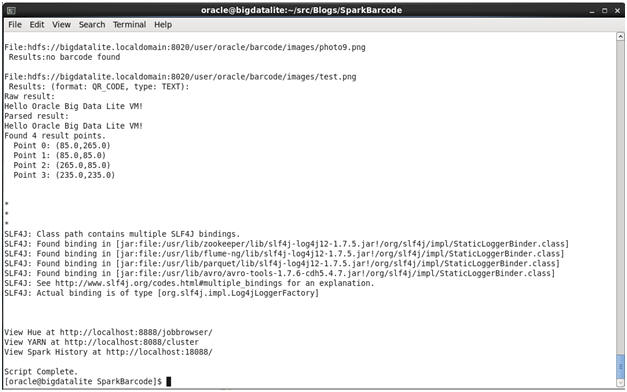
You will notice that a barcode was not detected in every image. In some cases, there simply wasn’t a barcode or QR code in the image. In other cases, there was a barcode but the image might have been fuzzy or too much glare or something else.
Running on a real cluster:
To get a feel for the power of scalability, we can copy our Barcode application and deploy it onto real-world hardware. In our case, we will use an older 6-node Oracle Big Data Appliance X3-2. While the BDA X3-2 lacks the huge horsepower of the latest generation BDA X5-2, it can still give us a place to demonstrate scalability. In our example, we will run the “run_barcode_many.sh” for 50 images against the Big Data Lite VM as well as against a 6-node X3-2 BDA.
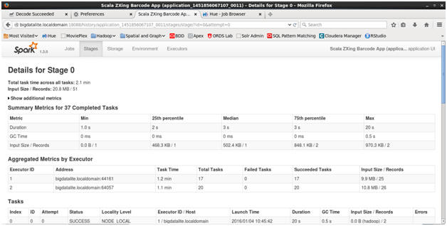
The screenshot above shows details from running the Barcode app on the Big Data Lite VM on my laptop. It used 2 executors and ran in 1.3 minutes of clock time. The screenshot below shows details from running on the 6-node BDA X3-2. Notice the different number of Executors (in the Aggregated Metrics by Executor section). On the BDA, we used 50 executors and it took 5 seconds of clock time. Both scenarios used the same code and same set of images.
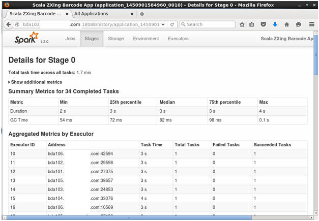
Notice how the Spark application was able to take advantage of the multiple machines and multiple CPUs of the BDA X3-2 to run in parallel and complete much faster (5seconds versus 1.3 minutes).
Moving Beyond:
Hopefully, this was a good start for your journey into Spark and Image Processing. Here are some possible future paths you could take:
- You could learn more about Spark. To do so, I liked the book “Learning Spark”.
- You could learn more about image detection and computer vision. To do so, I found the book “SimpleCV” to explain the concepts well (SimpleCV is python-focused, but its explanation of concepts are useful to any language).
- You could experiment with other libraries like OpenCV or Tesseract. Cloudera has a blog example using Spark with the open source Tesseract OCR library: http://blog.cloudera.com/blog/2015/10/how-to-index-scanned-pdfs-at-scale-using-fewer-than-50-lines-of-code/
- You could experiment with tweaking the sample java processImage() code to work as a custom FrameProcessor for the Oracle Big Data Spatial and Graph Multimedia Analytics feature. This could be used, for instance, to scan videos for barcodes. To do so, you can use processImage() as part of an implementation of the oracle.ord.hadoop.mapreduce.OrdFrameProcessor class. See http://docs.oracle.com/cd/E65728_01/doc.43/e67958/GUID-4B15F058-BCE7-4A3C-A6B8-163DB2D4368B.htm or stay tuned for an upcoming blog/example.
NOTE: If you want to play around with the source files and make modifications, you should probably copy the SparkBarcode directory tree into a new directory outside of /home/oracle/src. This is because the “Refresh Samples” utility will wipe-out the /home/oracle/src directory every time it runs.
Conclusion:
This blog has shown you how to do Barcode detection using the ZXing libraries. First, we illustrated ZXing in action by using the hosted web application at zxing.org. Next, we built and ran a simple standalone java application using the ZXing APIs. Then, we built a simple Spark(Scala) application that used the built-in java Image APIs (but not yet the ZXing APIs). We ran this Spark(Scala) application against the YARN cluster on our Big Data Lite VM. Then we built our final Spark(Scala) application which included our custom Java code that called the ZXing APIs. We ran this on our Big Data Lite VM YARN cluster for a set of sample images. Finally, we took the same code and images and ran them on a physical Big Data Appliance to show the benefit of scale-out parallelism across nodes and cpus.
Hopefully, this has made you more comfortable with working with tools like the Oracle Big Data Lite VM, Spark, Scala, sbt, and ZXing. Enjoy.
About the Author:
David Bayard is a member of the Big Data Pursuit team for Oracle North America Sales.